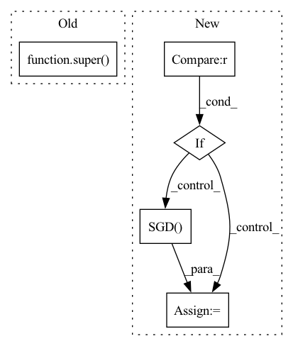

Pattern ID :40895

Before Change
def __init__(self, learning_rate, momentum=0.0, *args, **kwargs):
super().__init__(learning_rate, momentum, *args, **kwargs)
class Lamb(object):
After Change
def __init__(self, learning_rate=0.01, momentum=0.0, nesterov=False, weight_decay=0.0, grad_clip=None):
self.learning_rate = learning_rate
self.momentum = momentum
if weight_decay < 0.0:
raise ValueError("weight_decay should not smaller than 0.0, but got {}".format(weight_decay))
self.weight_decay = float(weight_decay)
self.grad_clip = grad_clip
self.nesterov = nesterov
self.sgd = tf.optimizers.SGD(learning_rate=self.learning_rate, momentum=self.momentum, nesterov=self.nesterov)
def apply_gradients(self, grads_and_vars):
if grads_and_vars is None:
raise ValueError("grads_and_vars is not set.")
In pattern: SUPERPATTERN
Frequency: 3
Non-data size: 5
Instances
Fragment ID: 115283060
Project Name: tensorlayer/tensorlayerx
Commit Name: fc4e6ad217c1fe6ef9637601309a42fdbd7ac75e
Time: 2022-03-25
Author: jiaronghan@outlook.com
File Name: tensorlayerx/optimizers/tensorflow_optimizers.py
M Class Name: Momentum
N Class Name: Momentum
M Method Name: __init__(6)
N Method Name: __init__(3)
M Parent Class: object
N Parent Class: tf.compat.v1.train.MomentumOptimizer
M File Name: tensorlayerx/optimizers/tensorflow_optimizers.py
N File Name: tensorlayerx/optimizers/tensorflow_optimizers.py
M Start Line: 314
M End Line: 314
N Start Line: 617
N End Line: 625
'>
Before Change
self.optimizer=torch.optim.SGD(self.classifier.parameters(), self.learning_rate)
def __new__(cls, **kwargs):
x = super(Optimizer, cls).__new__(**kwargs)
return x.optimizer
After Change
self.optimizer=torch.optim.ASGD(self.classifier.parameters(), self.learning_rate)
if self.type=="RMSprop":
self.optimizer=torch.optim.RMSprop(self.classifier.parameters(), self.learning_rate)
if self.type=="SGD":
self.optimizer=torch.optim.SGD(self.classifier.parameters(), self.learning_rate)
return self.optimizer
def create_loss_function(type):
'>
Fragment ID: 115283059
Project Name: radtorch/radtorch
Commit Name: 74eba02269194c439ff9240c292170a18abc83c0
Time: 2020-04-06
Author: elbanan@users.noreply.github.com
File Name: radtorch/test.py
M Class Name: Optimizer
N Class Name: Optimizer
M Method Name: __new__(1)
N Method Name: __new__(1)
M Parent Class:
N Parent Class:
M File Name: radtorch/test.py
N File Name: radtorch/test.py
M Start Line: 81
M End Line: 82
N Start Line: 64
N End Line: 74
'>
Before Change
def __init__(self, learning_rate=0.01, momentum=0.0, nesterov=False, *args, **kwargs):
super().__init__(learning_rate, momentum, nesterov, *args, **kwargs)
class Momentum(tf.compat.v1.train.MomentumOptimizer):
After Change
def __init__(self, learning_rate=0.01, momentum=0.0, weight_decay=0.0, grad_clip=None):
self.learning_rate = learning_rate
self.momentum = momentum
if weight_decay < 0.0:
raise ValueError("weight_decay should not smaller than 0.0, but got {}".format(weight_decay))
self.weight_decay = float(weight_decay)
self.grad_clip = grad_clip
self.sgd = tf.optimizers.SGD(learning_rate=self.learning_rate, momentum=self.momentum, nesterov=False)
def apply_gradients(self, grads_and_vars):
if grads_and_vars is None:
raise ValueError("grads_and_vars is not set.")
'>
Fragment ID: 115283058
Project Name: tensorlayer/tensorlayerx
Commit Name: fc4e6ad217c1fe6ef9637601309a42fdbd7ac75e
Time: 2022-03-25
Author: jiaronghan@outlook.com
File Name: tensorlayerx/optimizers/tensorflow_optimizers.py
M Class Name: SGD
N Class Name: SGD
M Method Name: __init__(5)
N Method Name: __init__(4)
M Parent Class: object
N Parent Class: tf.optimizers.SGD
M File Name: tensorlayerx/optimizers/tensorflow_optimizers.py
N File Name: tensorlayerx/optimizers/tensorflow_optimizers.py
M Start Line: 277
M End Line: 277
N Start Line: 548
N End Line: 554